I'm Cygnus, a Minecraft mapmaker and model artist. I started regularly making maps around 2020, and learned Blockbench and 3D modelling towards the end of 2022. I have had a longtime love for unique creations in Minecraft that provide an experience unlike anything found in standard survival mode; earlier in 2022, I joined a Java mapmaking team called Quillmark, where I am still working to create unique maps for Minecraft Realms and Planet Minecraft.
Frostbite Frenzy
Frozen Crag 2: Frostbite Frenzy is a map I worked on with the Quillmark team, released on Minecraft Realms and Planet Minecraft. My roles on the project were 3D modelling, programming, and building.
Miscellaneous Construction Props
Map Configuration Menus
Lobby Player Models for Map Credits
Another Credit Example
Animated Item Box
Mystery Box
Music Selection Phonograph
TTIAGTTAAAASAHTCMSATGH:AAAA
This map, also known as That Time I Accidentally Got Transported to an Actual Abandoned Alien Ship and Had to Collect My Stolen Antiques to Get Home: An Astronomical Antiques Adventure, is a roguelike map I made in three days with two other members of Quillmark for the Realms 10 Year Anniversary Mapjam. It recieved Fourth place from the judges and Second place from the community vote. My roles on this map were 3D modelling and pixel art.
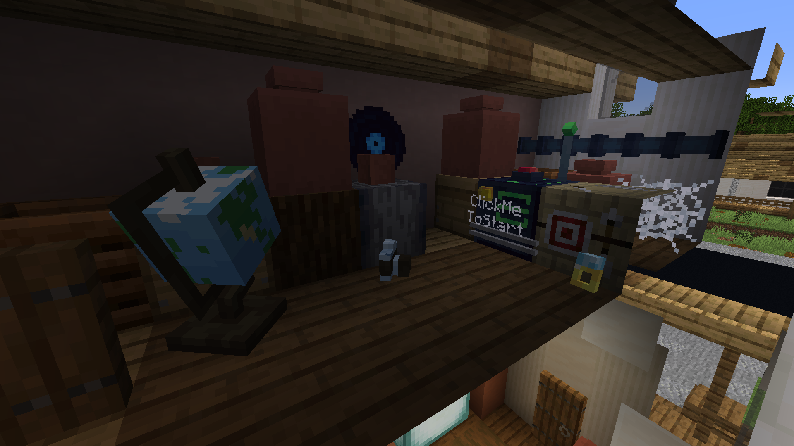
Pre-Lobby Attic Area
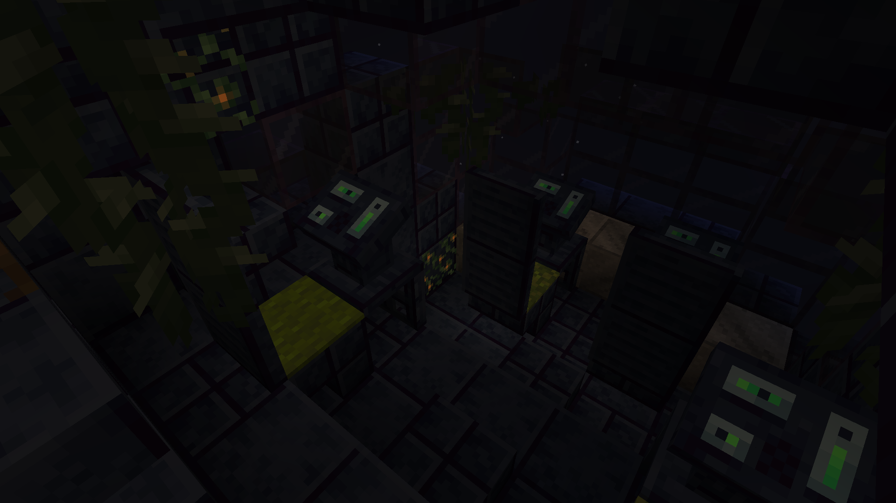
Lobby Spawnpoint
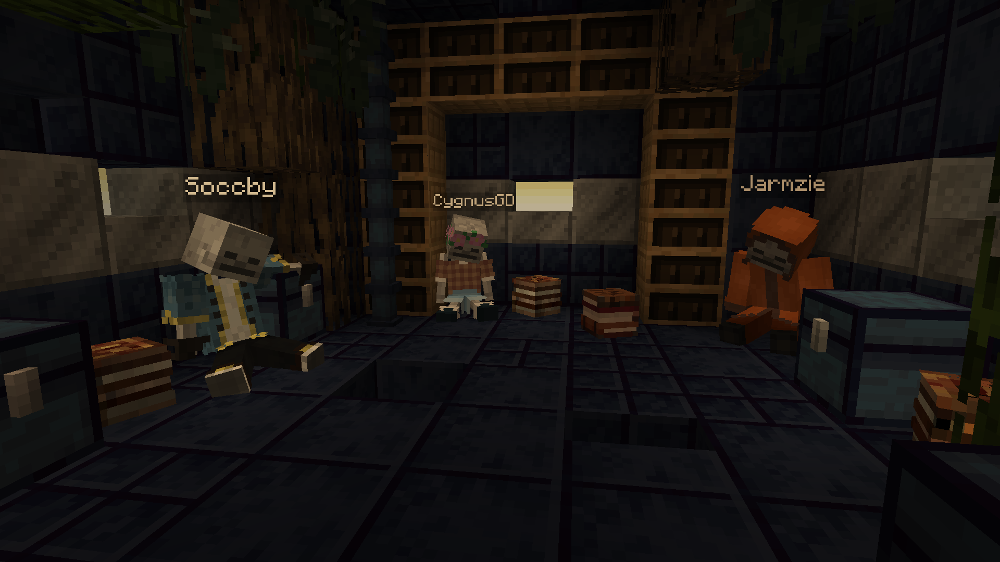
Lobby Credits Room
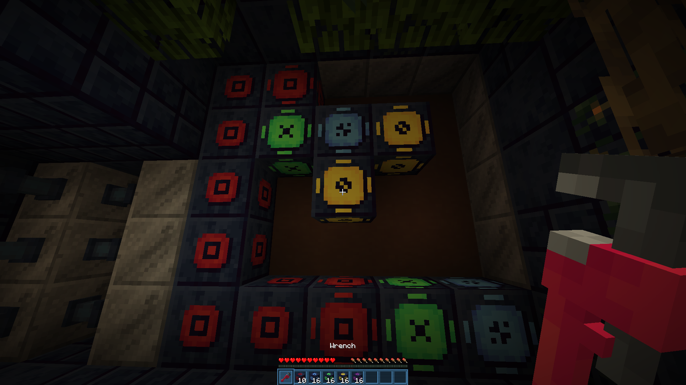
Puzzle Room
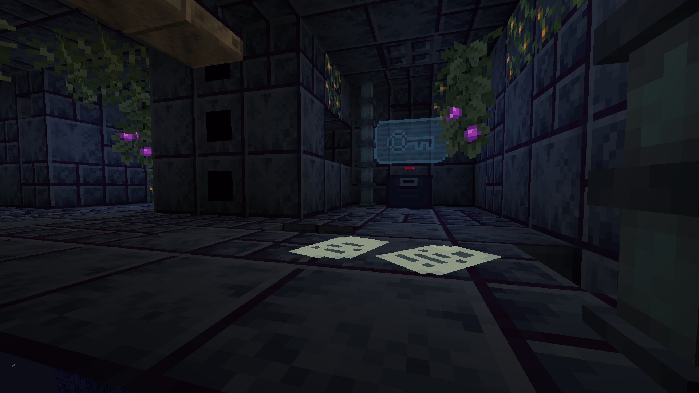
Keycard Dispenser
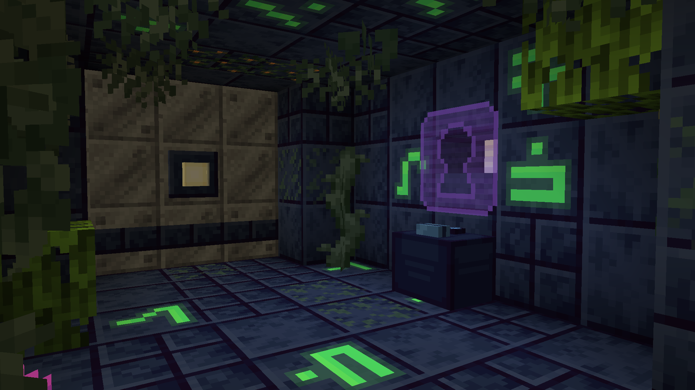
Keycard Reader
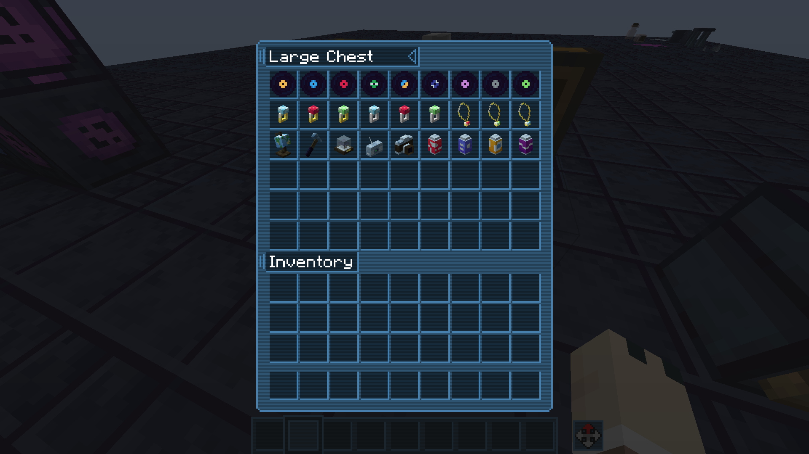
Every Discoverable "Antique" Item
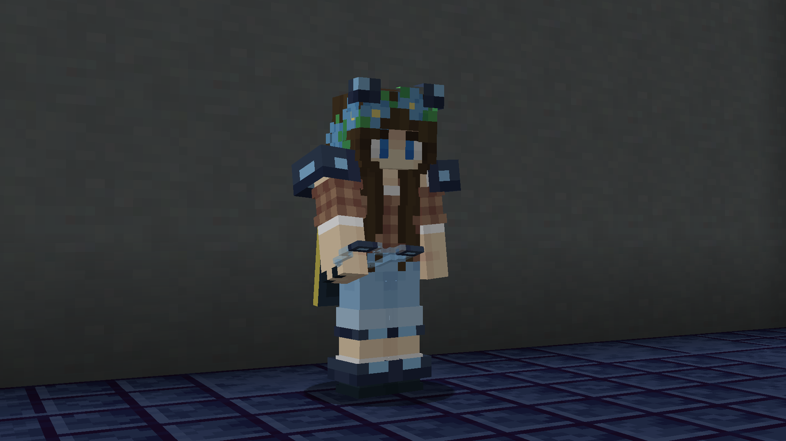
Weak Armor
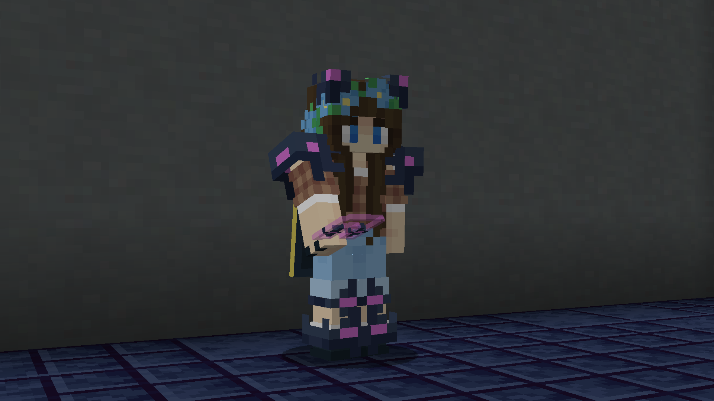
Strong Armor
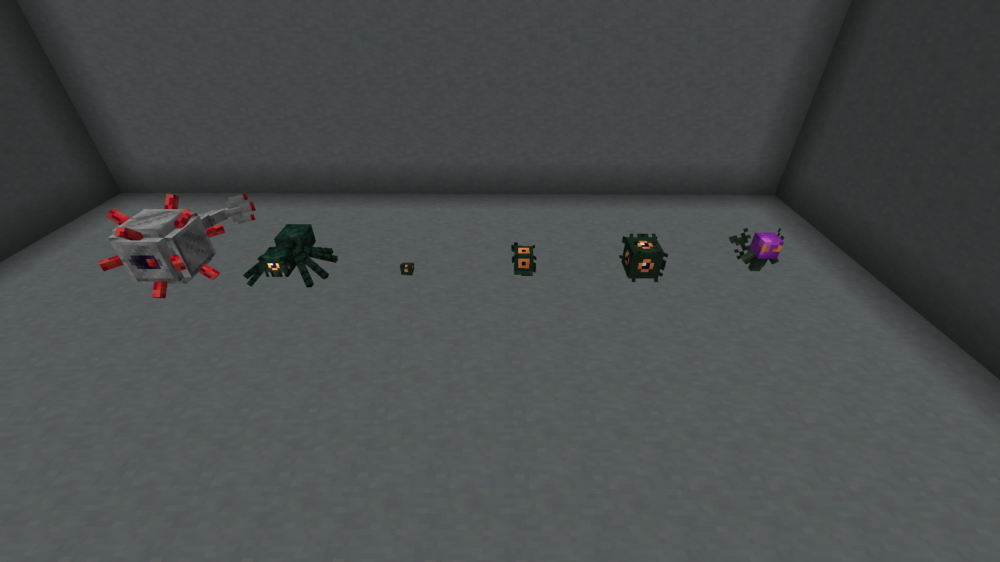
Retextured Mobs
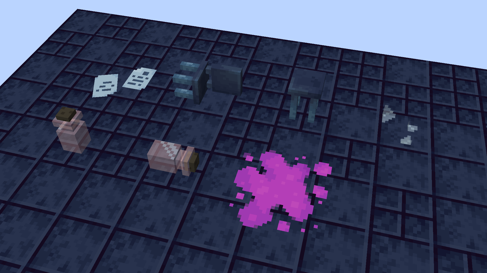
Randomly Generating Props
Other Models
These are models I made for smaller projects, unreleased maps, or another place where a custom model could be used.
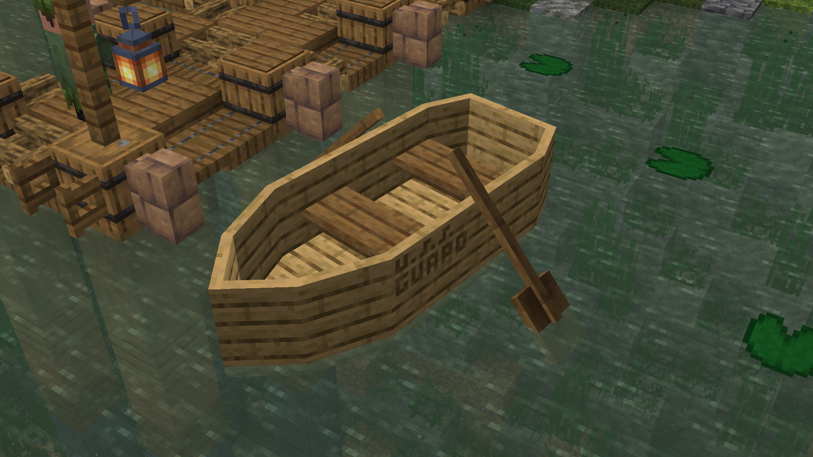
Boat Made for the Minecraft Realms 10 Year Anniversary Map
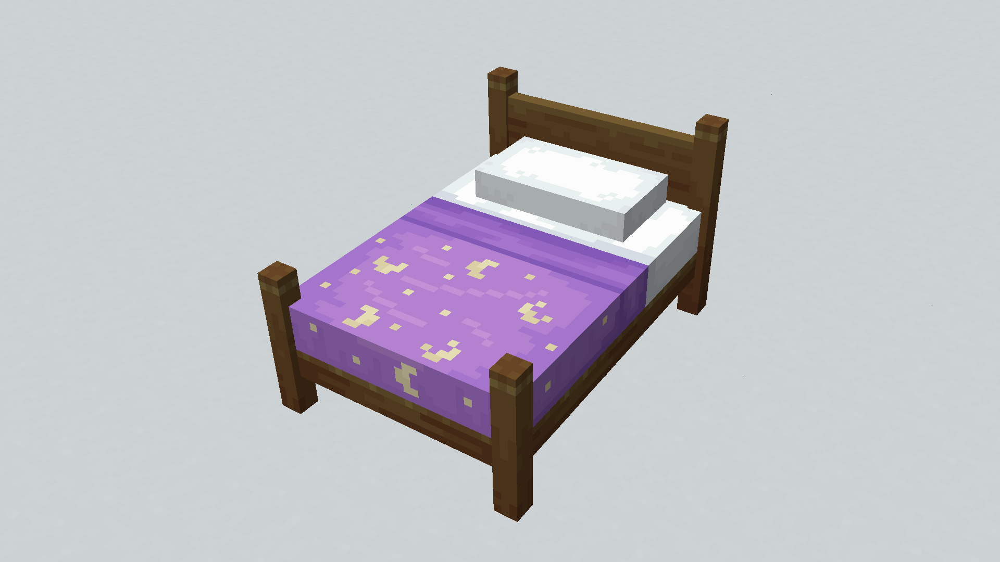
Rendition of Usagi Tsukino's Bed from Sailor Moon
Item from The Lotus, Another Mapjam Map
Phone from The Lotus
Train from The Lotus
Chisel and Hand Drill Tools from Mummies & Memory, A Solo Map
Book Models from An Unreleased Murder Mystery Map
Various Models from An Unreleased Murder Mystery Map
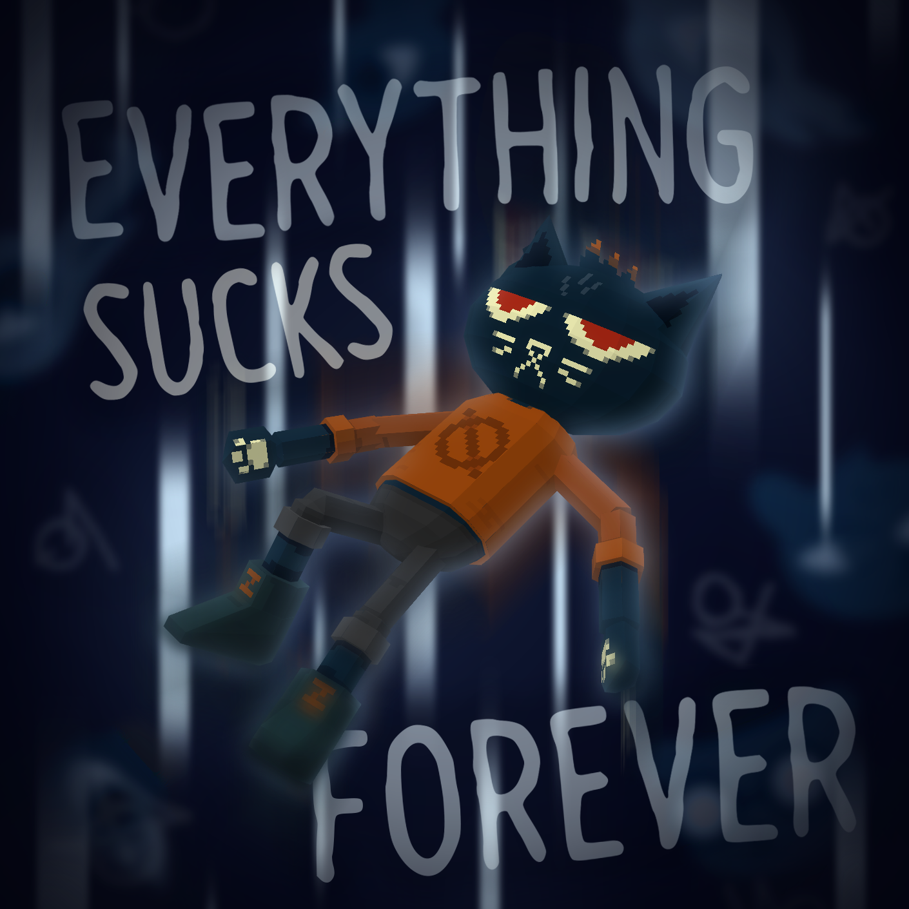
PS2-Style Rendition of Mae Borowski of Night in the Woods
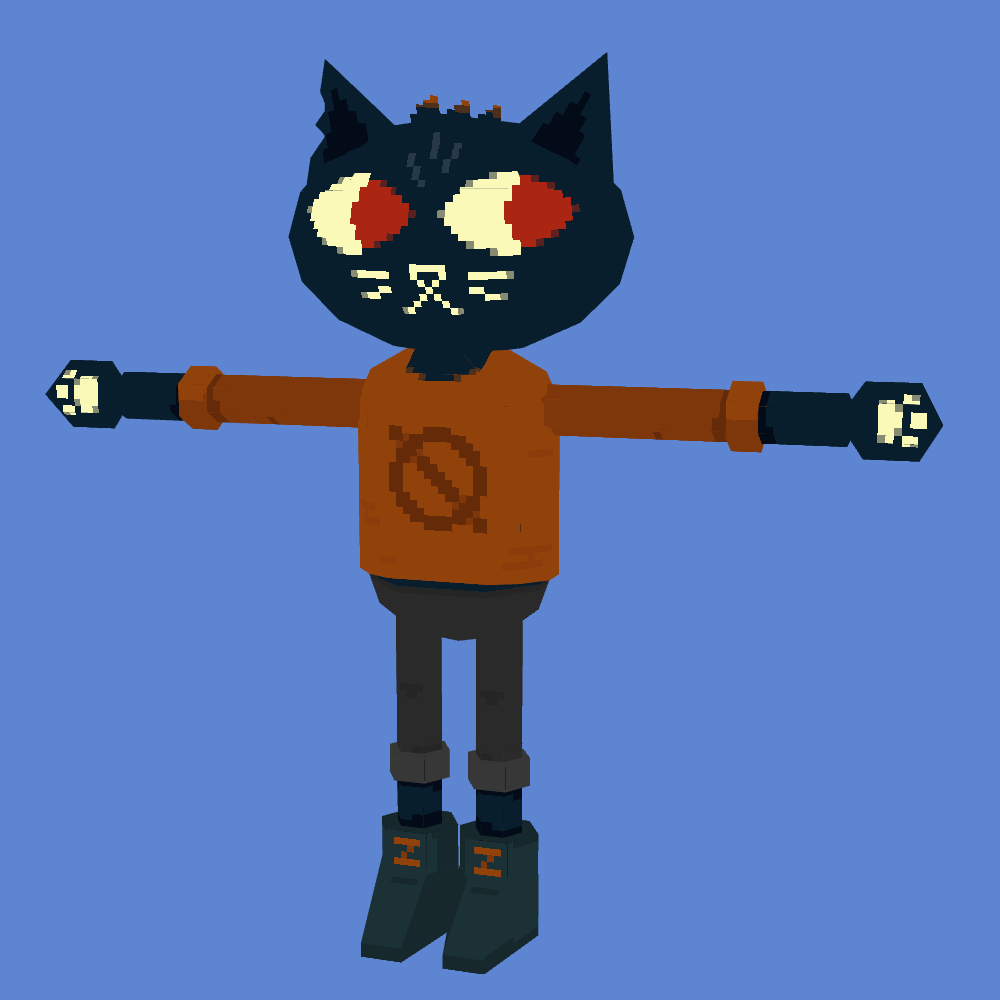
Mae T-Pose
Collection of Wing Cosmetics for Figura
Swan Wing Cosmetic for Figura
Collection of Horn Cosmetics
Collection of Pride Flag Offhand Cosmetics
Figura Avatar of Noelle Holiday from Deltarune
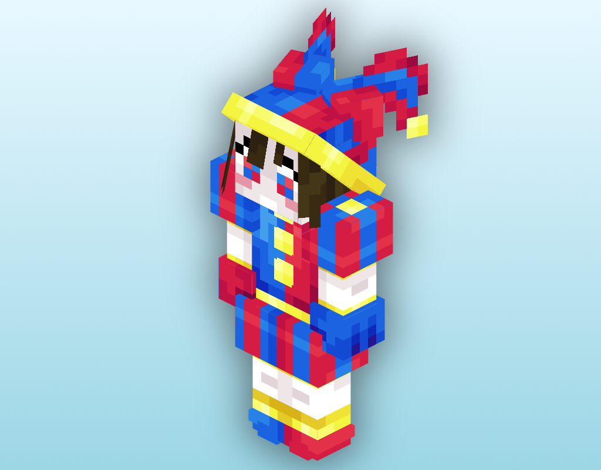
Figura Avatar of Pomni from The Amazing Digital Circus